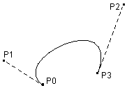

Bézierkurven
Nach Klick auf 'Zufallsfigur' bestimmt der Computer Zufallspunkte, Zufallsfarbe und zeichnet die Kurve von P0 zu P3.
Klick auf '2 Kurven' zeichnet dann eine zweite Bézierkurve von P3 nach P0, so dass eine geschlossene Kurve entsteht.
Sie können die vier Punkte mit Mausklick eingeben (Reihenfolge P0, P1, P2 und P3). Nach der Eingabe von P3 wird
die Bézierkurve von P0 nach P3 gezeichnet.
Alternativ können Sie die Koordinaten der Punkte auch in die entsprechenden Felder eingeben.
Der Zeichenbereich liegt für x- und y-Werte zwischen 0 und 10.
- x0 y0
- x1 y1
- x2 y2
- x3 y3
Anfangspunkt P0(x0/y0), Endpunkt P3(x3/y3); der Punkt P1(x1/y1) bestimmt die Tangente im Anfangspunkt, der Punkt P2(x2/y2) die Tangente im Endpunkt:

Die geschlossene Kurve entsteht, indem entweder P3 = P0 gewählt oder wie hier (mit Klick auf '2 Kurven'), eine zweite Bézierkurve mit Anfangspunkt P3 und Endpunkt P0 gezeichnet wird, während die Tangenten beibehalten werden.
©1997 - 2026 www.mathematik.ch |🔍